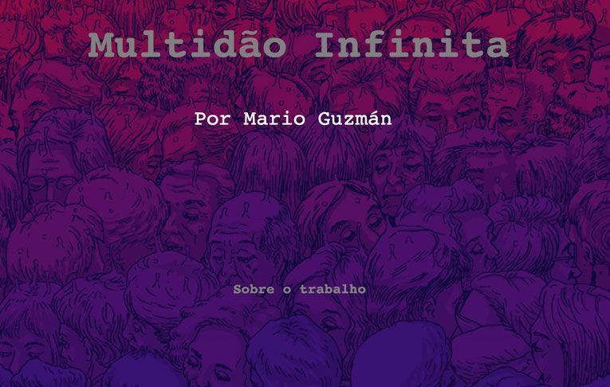
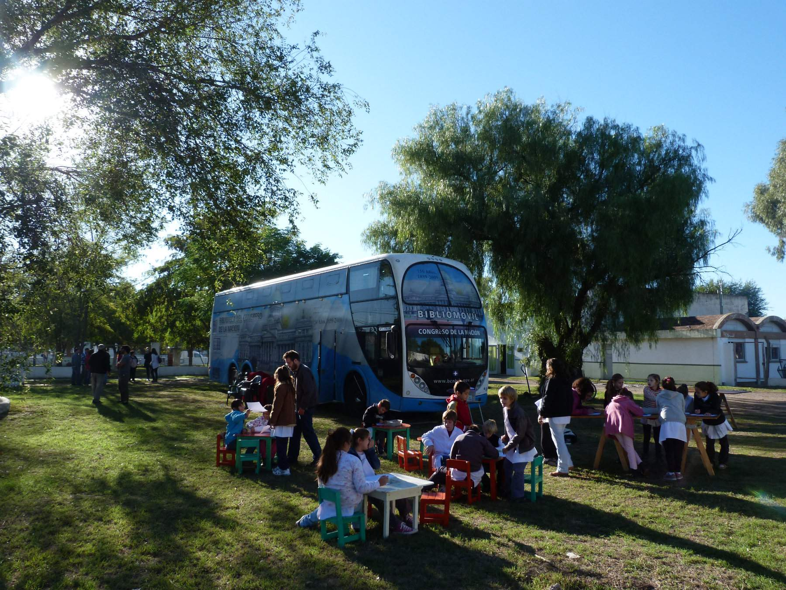
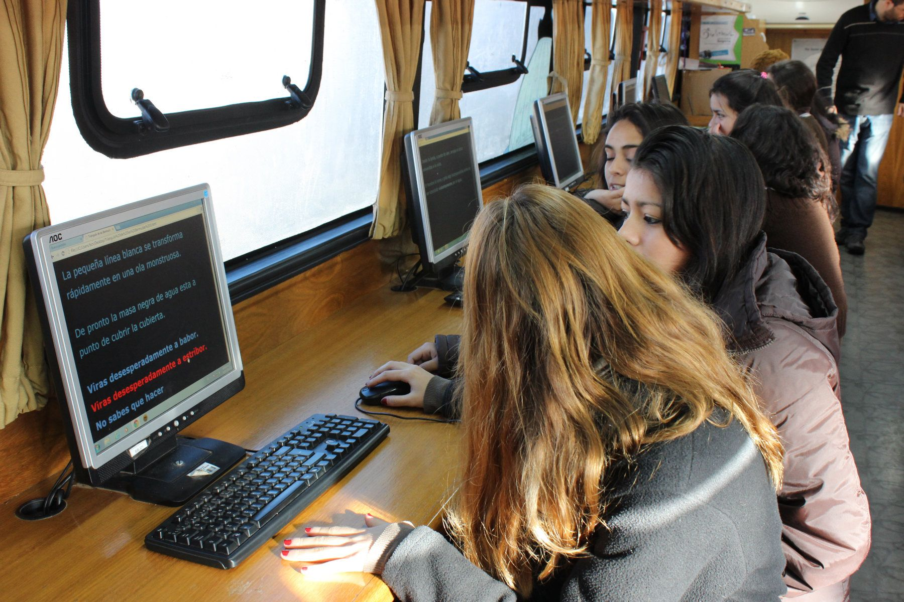
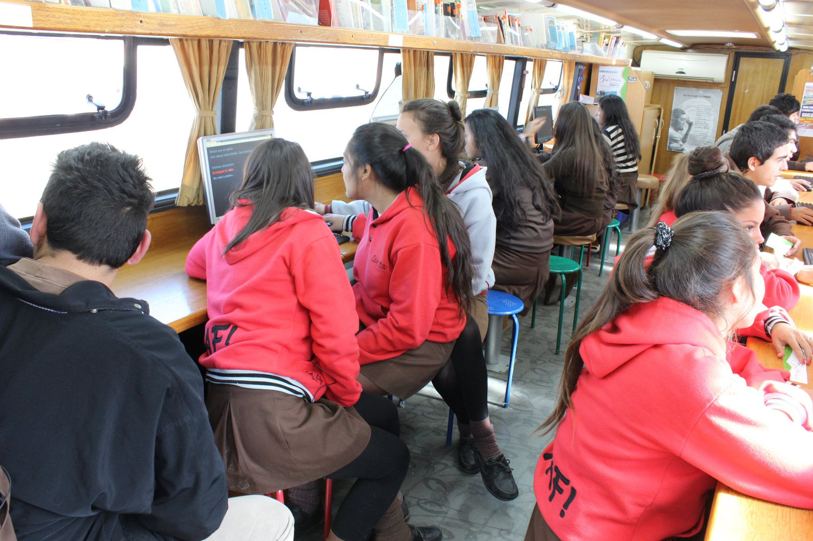
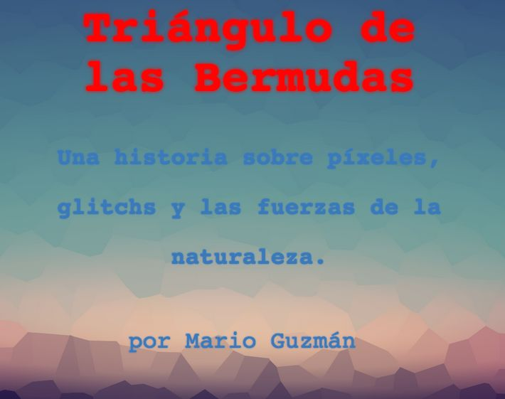

Discrete Infinity

Discrete infinity is a non-linear interactive text, a database and an experimental narrative that can be modified by its readers/users to articulate new routes.
At the same time, it gathers the words written in a database that serves as content to other interactive texts. The project, therefore, configures itself as a kind of dynamic hypertext that simultaneously transforms another set of texts.
Digital Literature / Non-linear
Digital Literature, Non-linear Narrative, Database, Internet.
Read story: Discrete Infinity Spanish Ed. · Discrete Infinity Portuguese Ed.
Nonlinear Education
These stories were built as an integral part of a National Digital Literacy program funded by the Argentinian Library of Congress inside the Bibliomovil project: a double-decker bus which included technological equipment and a nearly 5,000 book library.



Bermuda Triangle. A story about pixels, glitchs and the forces of nature (2014)
This interactive story raises an analogy between the forces of nature and the codifications of body and speech in the digital age.
Much has been theorized about the famous Bermuda Triangle and the mysterious disappearances that surround it, however little is known about the open coordinates within its perimeter. This story tells precisely these discoveries.
Digital Literature / Non-linear Digital Literature, Non-linear Narrative, Database, Internet.
Read story: Bermuda Triangle. A story about pixels, glitchs and the forces of nature Spanish Ed.

Exhibitions
- Digital storytelling week. Salvador de Bahía, Brasil, 2018.
- Digital Story Award Anthology. Itaú Bank, 2015.